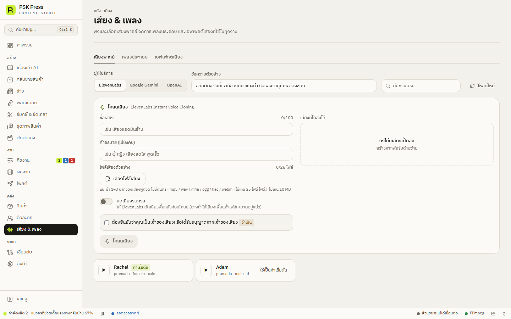

คลัง
เสียง & เพลง
เลือกและฟังเสียงพากย์ โคลนเสียงของคุณ จัดคลังเพลงประกอบและเอฟเฟกต์เสียง และสร้างเอฟเฟกต์ด้วย AI


เสียงพากย์
- เลือก ผู้ให้บริการ — ElevenLabs / Google Gemini / OpenAI (ต้องมีคีย์ของผู้ให้บริการนั้น)
- แก้ ข้อความตัวอย่าง เป็นประโยคที่จะใช้จริง
- ค้นหาเสียง แล้วกด ▶ เพื่อฟัง กด โหลดใหม่ เพื่อดึงรายชื่อเสียงล่าสุด
- ชอบเสียงไหน กด ใช้เป็นค่าเริ่มต้น — เสียงนั้นจะใช้กับทุกงานที่ไม่ได้เลือกเสียงเอง
ElevenLabs ดึงรายชื่อเสียงจากบัญชีของคุณ รวมถึงเสียงที่โคลนไว้ ส่วน Gemini และ OpenAI ไม่มีบริการดึงรายชื่อเสียง แอปจึงใช้รายชื่อตามเอกสารของผู้ให้บริการ
โคลนเสียง (ElevenLabs)
- ใส่ ชื่อเสียง และ คำอธิบาย (ไม่บังคับ)
- เลือกไฟล์เสียง — แนะนำ 1–3 นาทีของเสียงพูดชัด ๆ ไม่มีดนตรี ไฟล์ละไม่เกิน 10 MB
- เปิด ลดเสียงรบกวน ถ้าอัดในห้องที่มีเสียงรอบข้าง
- ติ๊กยืนยันว่าคุณเป็นเจ้าของเสียงหรือได้รับอนุญาตจากเจ้าของเสียง (จำเป็น)
- โคลนเสียง — เสียงใหม่จะอยู่ใน เสียงที่โคลนไว้ และในตัวเลือกเสียงทุกที่ (มีป้าย “โคลน”)
เพลงประกอบและเอฟเฟกต์เสียง
- นำเข้าไฟล์ — คัดลอกไฟล์เข้าคลังของแอป
- เชื่อมโฟลเดอร์ที่มีอยู่ — ใช้ไฟล์จากโฟลเดอร์เดิมในเครื่องโดยไม่คัดลอก (ตั้งที่ ตั้งค่า → โฟลเดอร์และเครื่องมือ)
แต่ละไฟล์บอกว่าอยู่ “ในคลังแอป” หรือ “จากโฟลเดอร์ที่เชื่อม” ไฟล์ในคลังแอปลบได้ในหน้านี้
ใช้เฉพาะเพลงและเสียงที่คุณมีสิทธิ์นำไปใช้ในวิดีโอ ถ้าจะใช้เพลงฮิตบน TikTok ให้เลือกเพลงตอนโพสต์ในช่อง “ชื่อเสียง/เพลงใน TikTok” แทนการใส่ในไฟล์
สร้างเอฟเฟกต์เสียงด้วย AI (ElevenLabs)
ในแท็บ เอฟเฟกต์เสียง → สร้างเอฟเฟกต์เสียงด้วย AI:
- อธิบายเสียง (อังกฤษได้ผลดีสุด) — เช่น whoosh transition, cash register ding หรือกดชิปตัวอย่าง
- ชื่อไฟล์ และ ความยาว 0.5–10 วินาที
- สร้าง — ไฟล์ใหม่จะเข้าคลังเอฟเฟกต์ ใช้เป็นเสียงตอนเปลี่ยนฉากหรือเสียงประกอบฮุคได้